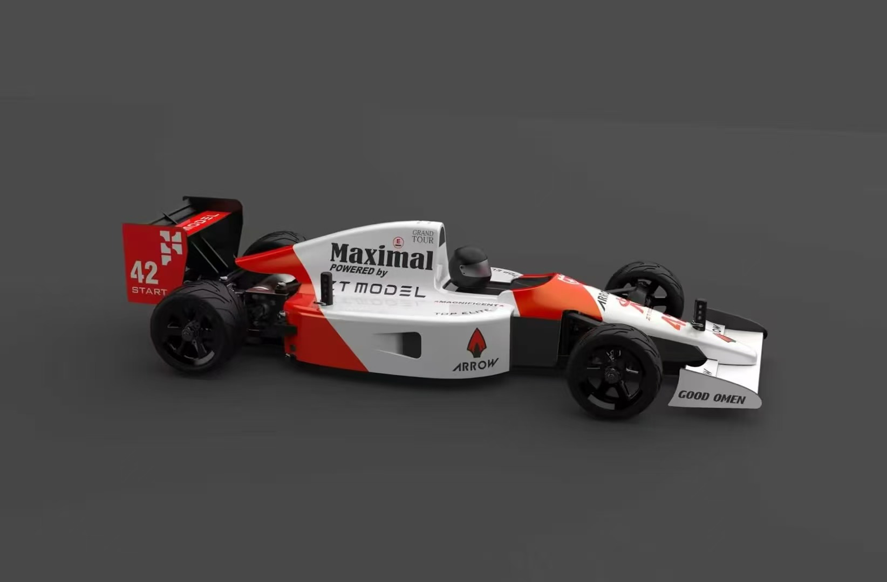

中国第一款 K12 自动驾驶赛车平台 · ZTMOTOR 烈驰 1/18

真实仪表 + 拖点改路线 + 一键连真车 + 加载 lap_editor 存档 —— 浏览器里就能开。
set_lap 实际下发数据
绿色 = 已上线 · 黄色 = 即将发布 · 红色 = 路线图未来。
CAD 文件 → 自动识别 OUTER/INNER 墙 → 厘米级还原真实赛道。
三档难度 + 多种形状,程序化生成无限赛道 —— 永远不重样。
3 个基站 + 1 标签 = 40Hz × 20cm 精度,室内 GPS 替代方案(比赛版配套)。
肉眼优化路线 / 段勾选 / 命名存档 / 三圈仿真预览。
ICM42688P 六轴融合,PI 控制器,直线偏差 < 5cm。
电压 / 速度 / 距离 / 航向 / 轨迹回放 一目了然。
实时电压电流 + 自动补偿时长 = 跨电池一致性。
板载摄像头 + TinyML 推理,识别车道 / 障碍 / 对手 — 桌面就能跑,不用基站。
UWB + 陀螺融合 cm 级闭环,自动纠偏,跨电池一致。
同场多车 + 自动避让 + 云端排行 + 全国联赛 + 直播集成。
给 8 WP,系统自动出 minimum-time 赛车线,比人手调快 15%。
仿真训百万次 → OTA 实车 → 比人开得还稳。
硬件相同,WP 数和 AI 功能解锁不同。可在线升级,数据无缝迁移。
💡 学校 / 培训机构批量采购可享 8 折 · 联系商务获取报价 · 教师培训免费
每一阶段 K12 学生都参与训练,亲手把自己的 AI 从「初学者」调到「AlphaCar」。
用户收入资助下一阶段研发 —— 不靠融资,靠现金流。
🏁 让车会跑 → ⚡ 跑得比人稳 → 🏆 跑得没人能赢
这就是自动驾驶赛车的 AlphaGo 时刻 —— 由中国 K12 学生在杭州的赛道上,亲手训练出来。